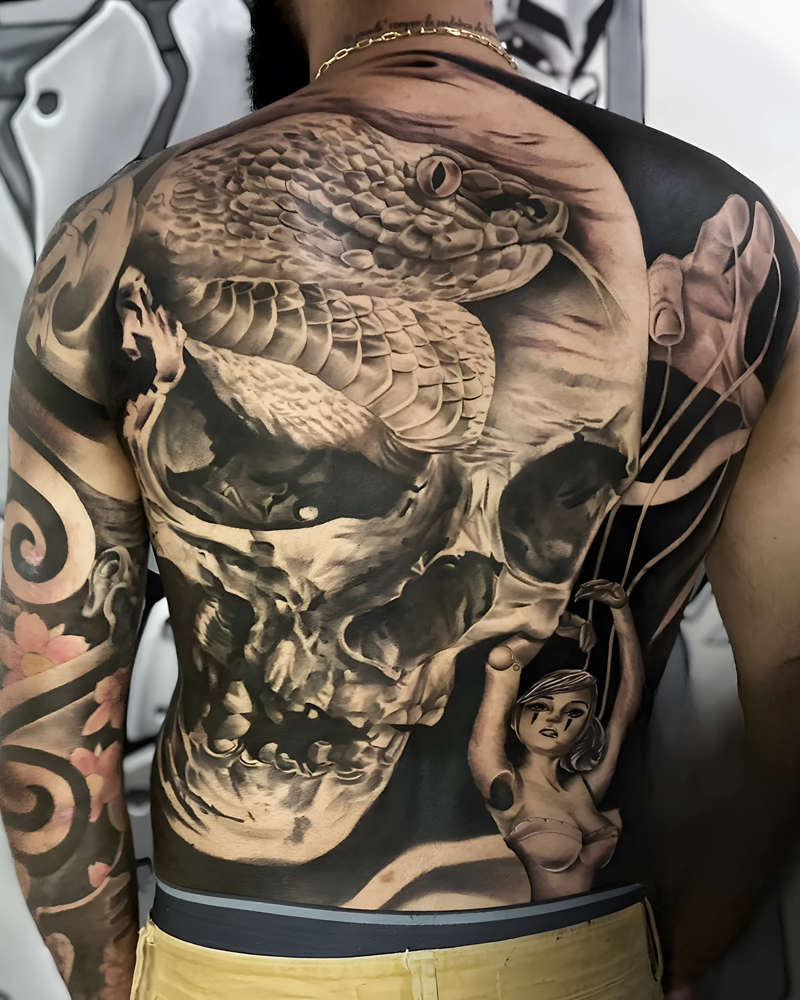
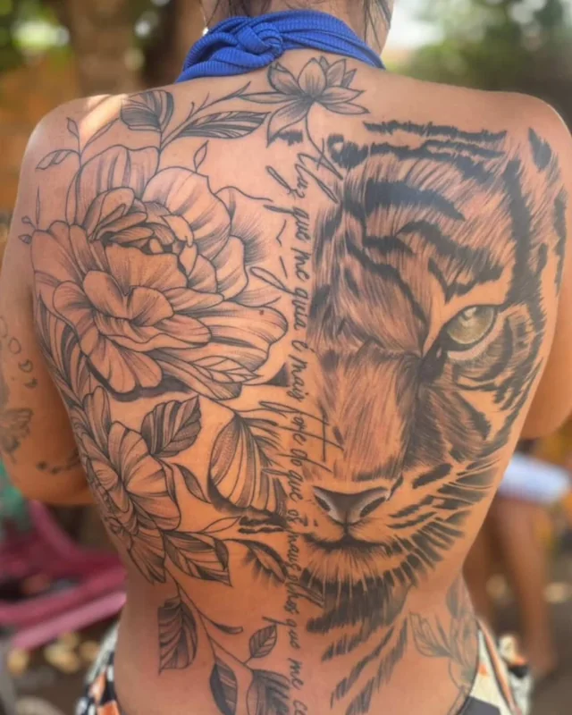
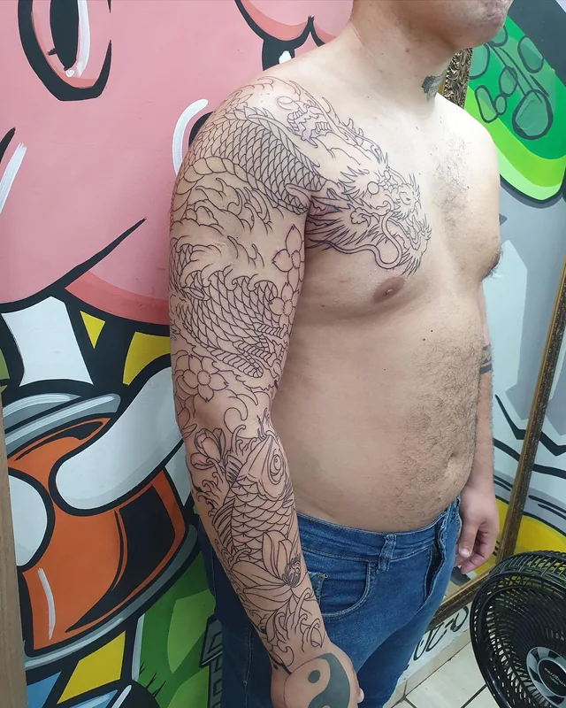
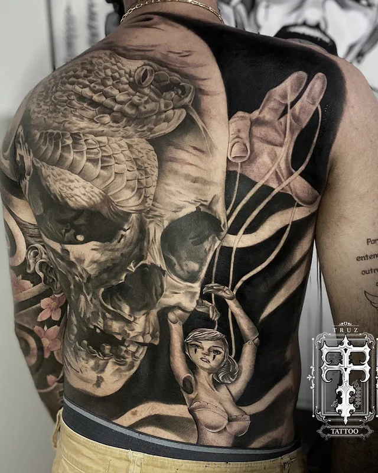
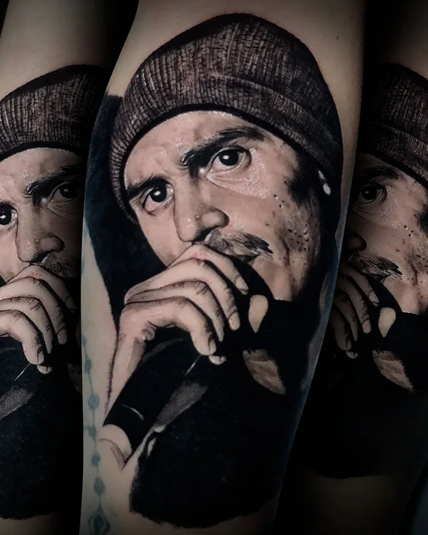
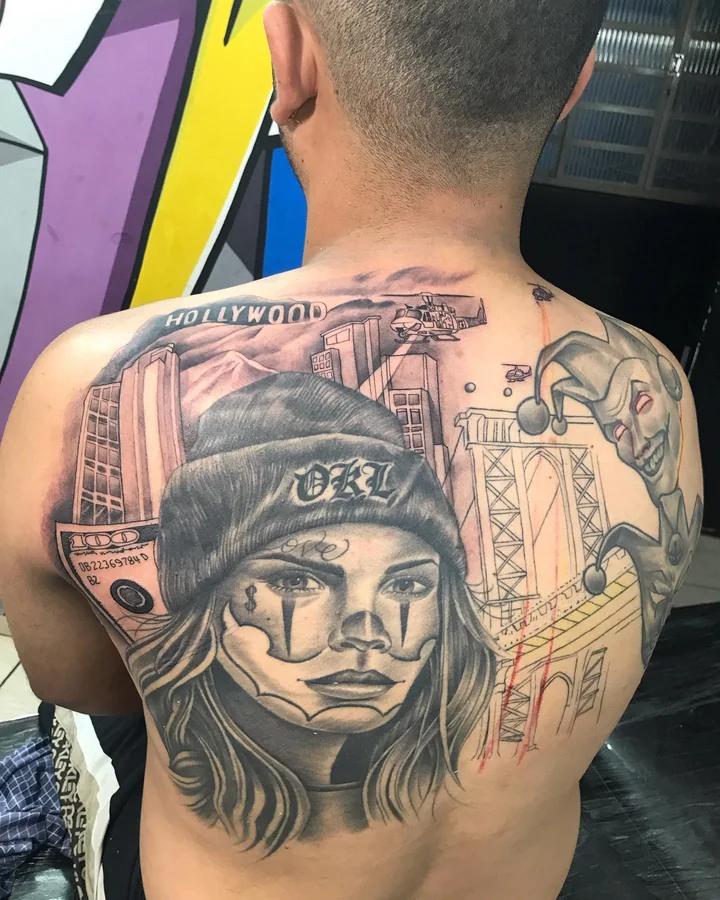
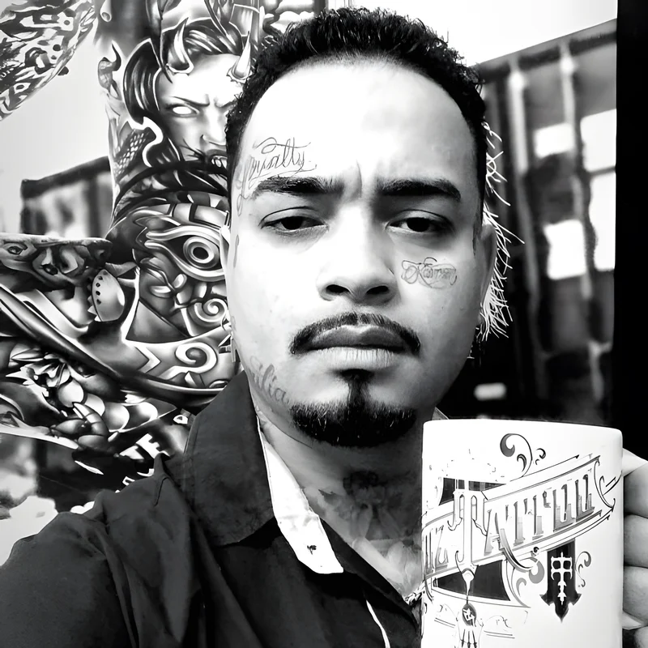

Realismo preto e cinza · Dourados-MS

Truz
Fechamento de costas
Fechamento de braço, costas, pescoço e perna. Do primeiro contorno à última sombra, sessão por sessão.

Fechamento é projeto
É o que mais sai da cadeira do Truz. A peça é desenhada para a parte do corpo inteira, e cada sessão encaixa na anterior até não sobrar pele vazia.
Do contorno ao fechado
Ninguém fecha as costas num dia. É assim que um projeto anda no estúdio.

Contorno
O desenho vai para a pele inteiro, já pensado para a área toda.

Sessões
Uma parte por vez. O que já cicatrizou ganha vizinho.

Fechado
Sombra, contraste e o acabamento que junta tudo.
Trabalhos
Da música à pele
Retrato em preto e cinza para quem carrega a rua e o rap no corpo. Sabotage e Mano Fler já passaram por aqui, nas costas de quem pediu.



O Truz
Tatuador de Dourados, especializado em realismo preto e cinza. Leão, lobo, Cristo, Nossa Senhora, caveira e retrato de quem a pessoa ama são o dia a dia da agenda.
Foi artista confirmado no 5º Campo Grande Tattoo Fest e já abriu o estúdio para artistas convidados em dias de flash.
Também faz fine line, escrita e cobertura de tatuagem antiga.
O estúdio
Truz Tattoo · Rua Coronel Ponciano, 2860 · Dourados-MS
- AtendimentoCom horário marcado
- PagamentoCartão de crédito e débito
- WhatsApp(67) 99813-5638
Peça seu orçamento
Conte a ideia, o lugar do corpo e o tamanho. A mensagem sai pronta no WhatsApp do Truz.
Ideia
O que você quer e se tem referência.
Orçamento
O Truz responde com valor e número de sessões.
Desenho
A arte é feita para o seu corpo.
Sessão
Data marcada no estúdio, em Dourados.